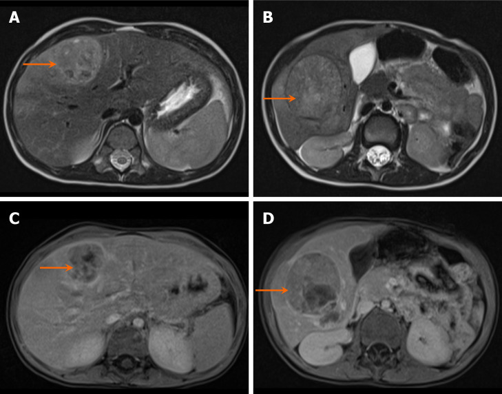
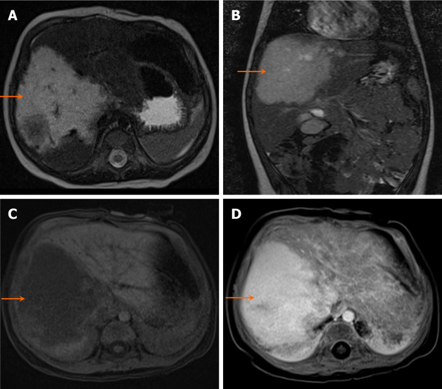
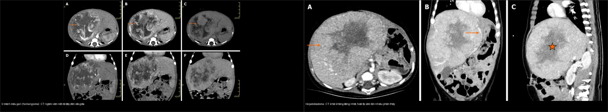
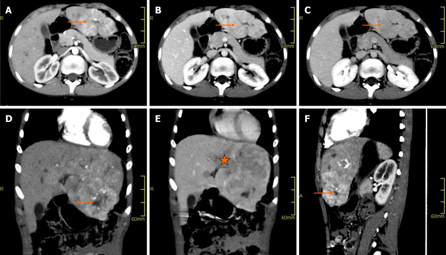
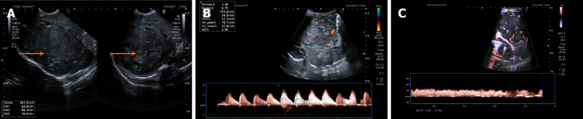
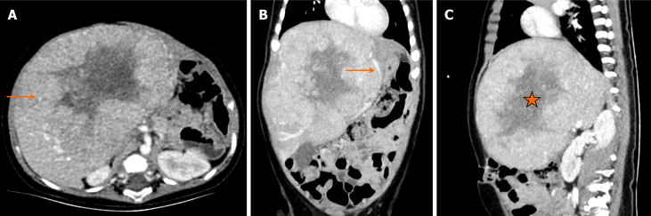
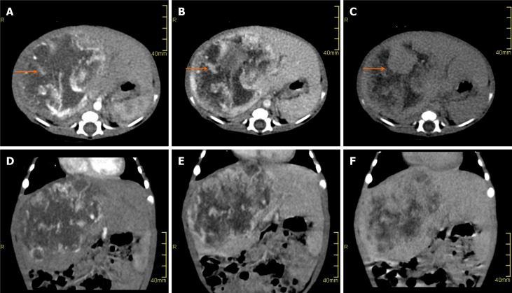
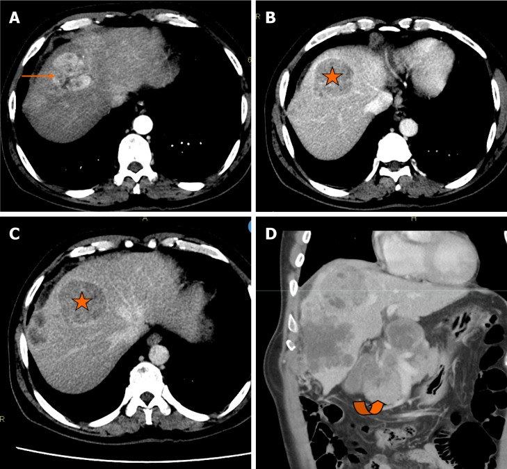
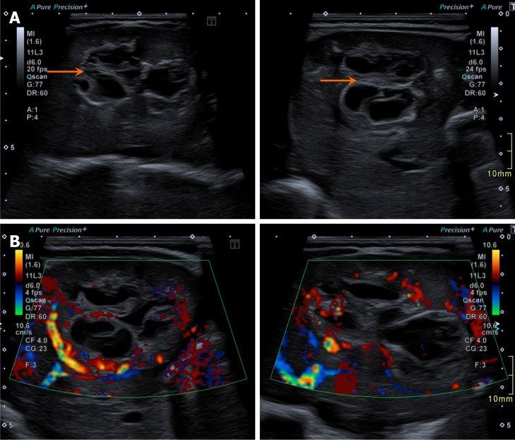

665 — Khối u gan ở trẻ em: u nguyên bào gan vs ung thư gan vs u mạch máu & u mô đệm lành / Pediatric liver masses
Tags: pattern:khoi-gan-nhi vung:gan score:PRETEXT protocol:US-CT-MRI-gan-nhi incidentaloma:khoi-gan-nhi
Mức chắc chắn (certainty): tổng hợp y văn (literature synthesis) — tổng hợp từ bài minireview hình ảnh khối gan nhi (Shahid M et al., World J Hepatol 2025, PMC12400384) + bảng phân độ PRETEXT, các ca minh họa là ca nguyên văn lấy từ bài gốc.
1. Tổng quan bệnh học – cơ chế hình ảnh
- Khối gan ở trẻ em được chia theo tuổi vì mô học phụ thuộc giai đoạn phát triển: dưới 6 tháng là nhóm mạch máu/mô đệm lành (u mạch máu [hemangioma], u mô đệm lành [mesenchymal hamartoma]); 6 tháng–5 tuổi là đỉnh của u nguyên bào gan (hepatoblastoma); trên 6 tuổi gặp ung thư gan (hepatocellular carcinoma — HCC), tăng sản nốt khu trú (focal nodular hyperplasia — FNH), u tuyến gan (hepatic adenoma).
- Alpha-fetoprotein (AFP) là mấu chốt lâm sàng, nhưng phải hiểu sinh lý: AFP sinh lý cao trong 6 tháng đầu nên chỉ số này có giá trị hạn chế ở trẻ < 6 tháng và không dùng để loại ác tính ở nhóm tuổi đó.
- Hepatoblastoma phát sinh từ tiền thân phôi (embryonal precursor) còn biệt hóa kém, kích thích trục IGF2; khối phát triển nhanh, thường > 5 cm khi chẩn đoán, hoại tử trung tâm và vôi hóa thô (chunky calcification) gặp ở 40–50%.
- U mạch máu (hemangioma) — trước đây gọi là u nội mô mạch máu ở trẻ nhũ nhi (infantile hemangioendothelioma) — là u mạch máu lành tính hay gặp nhất ở nhũ nhi, thường xuất hiện vài tuần đến vài tháng sau sinh. Cơ chế hình ảnh then chốt: u là hồ mạch máu chảy chậm nên trên CT/MRI ngấm thuốc dạng nốt ngoại vi không liên tục (peripheral nodular discontinuous enhancement) rồi đầy dần vào trung tâm (centripetal fill-in) thì tĩnh mạch và muộn — khác hoàn toàn kiểu ngấm đồng thì của khối đặc ác tính.
- TẠI SAO tín hiệu như vậy? Trên T2W, khối giàu nước/tế bào (hepatoblastoma, hamartoma dạng nang) và khối chứa máu chảy chậm (hemangioma) đều sáng — nên T2 sáng KHÔNG phân biệt được một mình. Cái phân biệt là động học ngấm thuốc: hemangioma ngấm viền rồi đầy dần; HCC ngấm mạnh thì động mạch rồi thải thuốc (washout) thì cửa/muộn (do tăng sinh mạch ĐM + dòng cửa giảm); FNH ngấm đồng sớm và sẹo trung tâm ngấm muộn dần (mô xơ ngấm thuốc chậm); adenoma ngấm động mạch, không sẹo.
- Ngưỡng định lượng bắt buộc (theo minireview + bảng PRETEXT): hepatoblastoma AFP > 10.000–100.000+ ng/mL, vôi hóa thô 40–50%, kích thước > 5 cm; hemangioma AFP bình thường hoặc tăng nhẹ < 100 ng/mL, vôi hóa gặp ở thể bẩm sinh (congenital), hầu như không có ở thể nhũ nhi (infantile), kích thước từ < 3 cm đến u khổng lồ > 5 cm (u khổng lồ có thể gây suy tim cung lượng cao); hamartoma mô đệm AFP bình thường, kích thước thường > 10 cm, nhiều vách; HCC AFP tăng ở 50–70% (có thể > 10.000 ng/mL), vôi hóa ~20%; FNH sẹo trung tâm ~80%, thường < 5 cm**; adenoma **> 5 cm tăng nguy cơ chảy máu.
- Vôi hóa: hepatoblastoma thô, đám; hemangioma thể bẩm sinh có thể vôi hóa; u mô đệm lành hiếm vôi hóa. Đây là chi tiết dễ bị bỏ qua khi đọc nhanh lát cắt.
- Cùng sáng trên T2, khác bản chất: hepatoblastoma (trái) sáng trên T2 do mô phôi giàu nước/tế bào, ngấm thuốc không đồng nhất do hoại tử; hemangioma (phải) sáng trên T2 do là mô mạch máu nhiều nước, ngấm đồng nhất mạnh.


2. Mẫu hình + chẩn đoán phân biệt theo tuổi (gamut)
- < 6 tháng tuổi: u mạch máu (hemangioma — thể bẩm sinh hoặc nhũ nhi), u mô đệm lành (mesenchymal hamartoma), hepatoblastoma bẩm sinh (hiếm), di căn (neuroblastoma thai nhi/trẻ nhũ nhi), nang đường mật (choledochal cyst).
- 6 tháng – 5 tuổi: hepatoblastoma (ưu thế tuyệt đối), u mô đệm lành, hemangioma còn ngấm, sarcoma phôi gan chưa biệt hóa (undifferentiated embryonal sarcoma — hiếm, thường 6–10 tuổi).
- > 6 tuổi: HCC (nền xơ gan/bệnh chuyển hóa như tyrosinemia), HCC thể sợi (fibrolamellar HCC — người trẻ, không nền xơ), FNH, adenoma (nữ, dùng thuốc tránh thai/steroid), sarcoma phôi, di căn.
- Gợi nhớ “khối gan nhi theo tuổi”: hepatoblastoma (6 tháng–5 tuổi) — hemangioma/hamartoma (< 6 tháng) — **h**CC/FNH/adenoma (> 6 tuổi).
- Một khối đặc lớn + AFP rất cao ở trẻ nhỏ = coi chừng hepatoblastoma đến khi loại trừ; khối nhiều nang ở nhũ nhi + AFP bình thường = u mô đệm lành; khối ngấm viền rồi đầy dần ở nhũ nhi = hemangioma.
3. Bảng so sánh phân biệt (ma trận đối chiếu)
| Thực thể (entity) | Hình ảnh điển hình (US/CT/MRI) | Chốt vào (rule-in) | Chốt loại (rule-out) | Gợi ý xác nhận |
|---|---|---|---|---|
| U nguyên bào gan (hepatoblastoma) | Khối đặc không đồng nhất, hoại tử, vôi hóa thô; T1 tối, T2 sáng, ngấm không đồng nhất | Tuổi 6 tháng–5 tuổi + AFP > 10.000 ng/mL + vôi hóa thô 40–50% | AFP bình thường + khối nhiều nang hoàn toàn → nghĩ u mô đệm lành | AFP, CT/MRI đa thì, MRI gan, sinh thiết khi cần phân tầng |
| U mạch máu (hemangioma) | Khối mạch máu giàu tưới máu; T2 sáng rất mạnh; ngấm viền nốt rồi đầy dần vào giữa | Nhũ nhi < 6 tháng + ngấm viền nốt không liên tục → đầy dần trung tâm | Ngấm mạnh thì động mạch rồi thải thuốc (washout) → nghĩ ác tính | Doppler US (chỉ số đề kháng thấp), CT/MRI đa thì, propranolol nếu u khổng lồ |
| U mô đệm lành (mesenchymal hamartoma) | Khối nhiều nang có vách xen mô đặc, ngấm ít | Nhũ nhi < 18 tháng + nhiều nang có vách + AFP bình thường | Khối đặc hoàn toàn + AFP rất cao → nghĩ hepatoblastoma | US + MRI, theo dõi/ cắt bỏ nếu chèn ép |
| Ung thư gan (HCC) | Khối ngấm mạnh thì động mạch + thải thuốc thì cửa/muộn; có thể hoại tử | Trẻ > 6 tuổi + AFP tăng (50–70%) + nền bệnh gan mạn/xơ gan | Sẹo trung tâm ngấm muộn dần, AFP bình thường → nghĩ FNH | AFP, MRI đa thì (DWI + mô học nếu cần) |
| Tăng sản nốt khu trú (FNH) | Khối ngấm đồng sớm, sẹo trung tâm; T2 sẹo sáng, ngấm muộn dần | Sẹo trung tâm ~80% + ngấm muộn của sẹo + AFP bình thường | Vôi hóa thô + AFP rất cao → nghĩ ác tính | MRI đa thì (chất tương phản tế bào gan), theo dõi |
| U tuyến gan (adenoma) | Khối ngấm động mạch, thì cửa/tĩnh mạch đẳng hoặc giảm; có thể có mỡ/xuất huyết; không sẹo | Nữ > 6 tuổi + tiền sử thuốc tránh thai/steroid + không sẹo trung tâm | Sẹo trung tâm → nghĩ FNH | MRI đa thì; cắt khi > 5 cm hoặc biến chứng |

Dấu hiệu chốt cần đọc đúng trên từng chuỗi xung
- Ngấm viền nốt không liên tục (peripheral nodular discontinuous enhancement): các nốt ngấm ở rìa ngấm không đều nhau, “nhảy cóc” quanh chu vi; đây là Chốt vào mạnh của hemangioma. Phân biệt với ngấm viền mỏng đều của áp-xe/u có vỏ.
- Đầy dần vào trung tâm (centripetal fill-in): ở thì muộn, các nốt rìa lan dần vào giữa. Ngược lại, thoát thuốc (washout) ở thì muộn hướng ác tính.
- Trên T1W, u chứa mỡ vi thể hoặc xuất huyết có điểm sáng; mô u đặc thường tối. Trên T2W, hemangioma sáng “đèn neon” vì là mô mạch máu nhiều nước, còn mô xơ (sẹo FNH, nốt xơ) tối.
4. Protocol chụp + hệ phân độ PRETEXT
- Protocol: (1) Siêu âm bụng đầu tay — xác định khối đặc/nang, tưới máu bằng Doppler; (2) CT bụng đa thì (trước tiêm, thì động mạch ~25–35 s, thì cửa ~65–70 s, muộn 3–5 phút) hoặc MRI gan (T1/T2 fat-sat, DWI/ADC, động học sau tiêm 3 thì, xem xét chất tương phản đặc hiệu tế bào gan cho FNH); (3) AFP huyết thanh trước điều trị; (4) tìm các tổn thương vệ tinh/ di căn phổi bằng CT ngực.
- Phân độ PRETEXT (pretreatment extent of disease) dùng cho hepatoblastoma — đếm số phân thùy (section) còn trống u, có “+” chú giải:
| Độ (stage) | Định nghĩa |
|---|---|
| PRETEXT I | Ba phân thùy liền kề không có u; u chỉ ở phân thùy trái-bên hoặc phải-sau |
| PRETEXT II | U ở một hoặc hai phân thùy, không còn hai phân thùy liền kề trống; u khu trú thùy đuôi cũng xếp II |
| PRETEXT III | U cả thùy phải và trái, hai hoặc ba phân thùy; chỉ còn một phân thùy liền kề trống |
| PRETEXT IV | Bệnh nhiều ổ xâm lấn cả bốn phân thùy |
- Chú giải PRETEXT: P (tĩnh mạch cửa), V (tĩnh mạch gan), E (lan ngoài gan), M (di căn), C (thùy đuôi), F (nhiều ổ), R (vỡ khối). Ví dụ minh họa trong nguồn: “PRETEXT III C” (xâm lấn thùy đuôi) và “PRETEXT II F” (nhiều ổ ở thùy phải).
- Phân tầng nguy cơ dựa trên PRETEXT + tuổi + AFP + yếu tố chú giải; CHIC (Children’s Hepatic tumors International Collaboration) cũng đưa AFP và di căn vào nhóm nguy cơ — quyết định số đợt hóa trị và khả năng phẫu thuật/ghép gan.
- Sơ đồ tiếp cận theo tuổi:
flowchart TD
A[Khối gan ở trẻ] --> B{Tuổi?}
B -->|Dưới 6 tháng| C{AFP và hình thái}
C -->|Nhiều nang vách, AFP thường| D[U mô đệm lành]
C -->|Ngấm viền nốt đầy dần| E[U mạch máu hemangioma]
C -->|Khối đặc + AFP rất cao| F[Nghi hepatoblastoma bẩm sinh]
B -->|6 tháng - 5 tuổi| G[Ưu thế hepatoblastoma: AFP + PRETEXT]
B -->|Trên 6 tuổi| H{Nền bệnh gan?}
H -->|Có xơ gan/bệnh chuyển hóa| I[HCC]
H -->|Không| J{Sẹo trung tâm?}
J -->|Có| K[FNH]
J -->|Không| L[Adenoma / sarcoma phôi / khác]
5. Biến thể bình thường và cạm bẫy
- AFP sinh lý cao trong 6 tháng đầu → một AFP tăng nhẹ ở nhũ nhi KHÔNG đủ khẳng định ác tính; phải so với tuổi và theo dõi động học.
- U mạch máu có thể thoái triển tự nhiên — đừng vội can thiệp nếu không biến chứng (suy tim cung lượng cao, chèn ép). Theo dõi kích thước và dấu hiệu suy tim.
- U mô đệm lành có thể tăng AFP (đã có ca báo cáo) → một AFP cao không loại trừ được u lành; cần hình thái nhiều nang + mô học.
- Sẹo trung tâm không đặc hiệu: gặp cả ở FNH (ngấm muộn) và ở HCC thể sợi (fibrolamellar HCC) — HCC thể sợi có thể kèm huyết khối tĩnh mạch và tiên lượng khác, nên phải đọc kỹ tĩnh mạch.

- Cạm bẫy mặt cắt: “khối” ở gan trẻ nhỏ có thể chỉ là thùy gan bình thường biến dạng do chèn ép (dấu Reidel, thùy phụ) hoặc giả khối do nhịp thở/giả ảnh trên US — đối chiếu CT/MRI trước khi kết luận. Trên US, u mạch máu có thể không đồng nhất, giả đặc (xem ảnh dưới) khiến dễ nhầm khối đặc.
- Đừng quên ổ thứ hai: hepatoblastoma nhiều ổ và di căn phổi (PRETEXT M) làm đổi hoàn toàn chiến lược → luôn chụp CT ngực.

6. Tự lượng giá — Blind Quiz
Ca 1 — Bé gái 4 tuổi, bụng căng, sụt cân, AFP tăng rất cao. Đọc CT bụng có tiêm thuốc.

- Gợi ý lâm sàng: tuổi mẫu giáo, bụng to nhanh, AFP cao.
- Câu hỏi: Khối chiếm mấy phân thùy? Có dấu hiệu hoại tử không? 3 chẩn đoán phân biệt và dấu hiệu nào chốt chẩn đoán?
Bấm để hiện đáp án (findings + chẩn đoán)
- Dấu hiệu (findings): khối không đồng nhất ở gan, xâm lấn cả hai thùy (phân thùy I, IV, V, VIII), đẩy lệch tĩnh mạch cửa trái, có vùng giảm đậm độ do hoại tử ở giữa, không thấy vôi hóa trên ca này — phân độ PRETEXT III C (xâm lấn thùy đuôi).
- Chẩn đoán (diagnosis): u nguyên bào gan (hepatoblastoma) — vì tuổi 6 tháng–5 tuổi + AFP rất cao + khối đặc lớn không đồng nhất xâm lấn nhiều phân thùy; hoại tử trung tâm giải thích vùng giảm ngấm.
- Nguồn ảnh: Shahid M et al., World J Hepatol 2025 (PMC12400384, Fig. 2), CC BY-NC.
Ca 2 — Bé trai 11 tháng, nôn và khối hạ sườn phải. Chọn chẩn đoán cho CT ngấm thuốc.

- Gợi ý lâm sàng: nhũ nhi, khối lớn, không rõ AFP.
- Câu hỏi: Kiểu ngấm thuốc là gì? Vì sao nó loại ác tính? Chẩn đoán?
Bấm để hiện đáp án (findings + chẩn đoán)
- Dấu hiệu (findings): khối lớn thùy phải gan; thì động mạch có ngấm viền nốt không liên tục, các thì muộn đầy dần vào trung tâm — hình mẫu hemangioma.
- Chẩn đoán (diagnosis): u mạch máu gan (hemangioma, trước gọi u nội mô mạch máu). Cơ chế: u là các hồ mạch chảy chậm → thuốc ngấm dần theo dòng chậm vào lòng mạch, khác hẳn kiểu ngấm-thải của HCC.
- Nguồn ảnh: Shahid M et al., World J Hepatol 2025 (PMC12400384, Fig. 5), CC BY-NC.
Ca 3 — Bé trai 14 tuổi, tiền sử viêm gan C và xơ gan. Đọc CT bụng thì động mạch.

- Gợi ý lâm sàng: trẻ lớn, nền xơ gan.
- Câu hỏi: Dấu hiệu động học ngấm thuốc? Chẩn đoán và yếu tố nguy cơ?
Bấm để hiện đáp án (findings + chẩn đoán)
- Dấu hiệu (findings): ổ ngấm mạnh thì động mạch ở phân thùy VIII, sau đó thải thuốc (washout) thì tĩnh mạch cửa và muộn; kèm đám hạch quanh tụy.
- Chẩn đoán (diagnosis): ung thư gan (HCC). Cơ chế washout: u tăng sinh mạch động mạch nhưng mất dòng tĩnh mạch cửa → ngấm động mạch rồi nhanh chóng “nhạt” ở thì muộn. Yếu tố nguy cơ: bệnh gan mạn/xơ gan, bệnh chuyển hóa (ví dụ tyrosinemia).
- Nguồn ảnh: Shahid M et al., World J Hepatol 2025 (PMC12400384, Fig. 9), CC BY-NC.
Ca 4 — Bé trai 1 ngày tuổi, siêu âm tiền sản thấy cấu trúc “đa nang hồi âm”. Đọc siêu âm sau sinh.

- Gợi ý lâm sàng: sơ sinh, tổn thương phát hiện trước sinh, AFP chưa đủ tin cậy vì còn sinh lý.
- Câu hỏi: Mẫu hình chính? Chẩn đoán hàng đầu?
Bấm để hiện đáp án (findings + chẩn đoán)
- Dấu hiệu (findings): khối nhiều nang, có vách, xen mô đặc, bờ phân thùy (lobulated), ít tưới máu bên trong.
- Chẩn đoán (diagnosis): u mô đệm lành của gan (mesenchymal hamartoma) — thường < 18 tháng tuổi, mô đệm nguyên thủy tạo nhiều khoang dịch. Cẩn thận: AFP ở nhũ nhi cao sinh lý nên không dùng để kết luận ác tính.
- Nguồn ảnh: Shahid M et al., World J Hepatol 2025 (PMC12400384, Fig. 8), CC BY-NC.
Bài liên quan chéo
- 600 – Tổng quan Hệ Nhi khoa (bảng DDx khối bụng nhi)
- 630 – U bụng nhi: neuroblastoma vs Wilms (hepatoblastoma được gọi tên trong gamut)
- 625 – Vàng da tắc mật sơ sinh (teo đường mật) (nang đường mật ở trẻ)
- 120 – Khối gan nền lành vs xơ (động học ngấm gan người lớn)
- 121 – LI-RADS & HCC (tiêu chuẩn ngấm-thải của HCC)
- 122 – U lành & áp-xe gan (hemangioma/FNH/adenoma)
- 131 – Tắc mật (nang ống mật chủ)
Ảnh
- Tên file
665_..._PMC12400384-FigN-...jpg, nguồn + giấy phép từng ảnh trongimages/CREDITS.md. Toàn bộ ảnh: CC BY-NC (Shahid M et al., World J Hepatol 2025, PMCID PMC12400384) — cho phép dùng phi thương mại + ghi nguồn. - Ảnh ghép
images/composite_hemangioma-vs-hepatoblastoma.jpgtạo bằngtools/make_composite.py, letterbox nền đen, giữ tỷ lệ. - Không tải Google Images / AuntMinnie; nguồn đóng chỉ dẫn link tại
sources.md.
Không dùng để chẩn đoán độc lập khi chưa có người hướng dẫn.